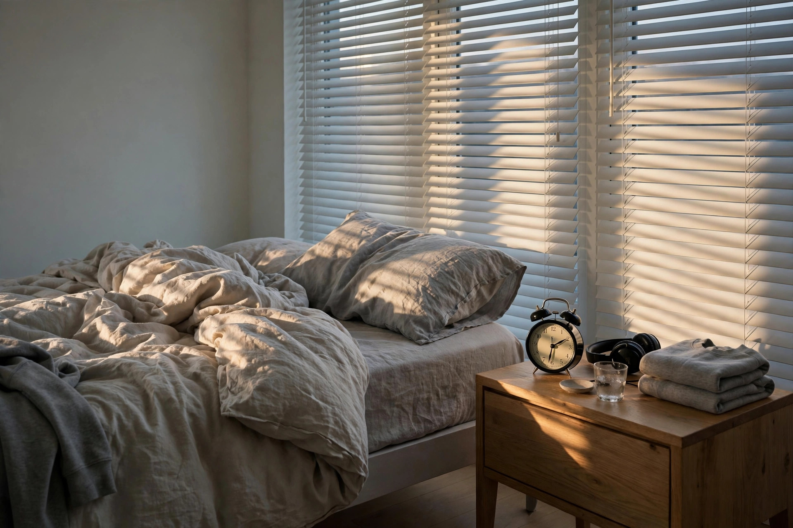

Teen sleep schedules and the morning battle: work backwards from wake-up

Every school morning, the same war: the alarm goes off, nothing happens, you knock, you call, you knock louder, and twenty minutes later a furious, half-dressed teenager is blaming you for a late start neither of you wanted. It feels like a motivation problem. Almost always, it is a math problem — and the math is being done at the wrong end of the day.
You cannot fix a wake-up time. Wake-up is set by the school bus, the first period bell, and the commute. What you can fix is the other end: when your teen actually falls asleep. This guide does the arithmetic, then hands the morning over to the person who has to live it.
Why your teen is not just being difficult
During adolescence, the sleep hormone melatonin is released later at night than it was in childhood. Your teen genuinely does not feel sleepy at 9:30 the way they did at age nine — many get a second wind in the late evening instead. At the same time, they still need a lot of sleep: the American Academy of Sleep Medicine recommends that adolescents aged 13 to 18 get 8 to 10 hours of sleep a night, and that sleep supports physical health, mental health, attention, behavior, and readiness to learn.
So the situation is rigged: biology pushes bedtime later, school pulls wake-up earlier, and the gap is paid for in morning misery. Nagging a tired brain awake treats the symptom. The workable lever is protecting the full 8 to 10 hours inside a schedule the family actually designs — together, on paper, before Monday arrives.
Do the backwards math
Start from the one fixed point and subtract. Take your teen's required wake-up time, subtract the sleep they need, then subtract a wind-down buffer — because nobody falls asleep the second their head lands, and a predictable wind-down routine at roughly the same time each night is what signals the body to shut down. Devices complicate this: guidance summarized by the CDC says devices should be put away at least an hour before bedtime, and phones stored overnight outside the bedroom are associated with more sleep, earlier bedtimes, and better sleep quality than phones kept in the room.
| Must wake at | Asleep by (for 9 hours) | Devices away / wind-down starts |
|---|---|---|
| 6:00 a.m. | 9:00 p.m. | 8:00 p.m. |
| 6:30 a.m. | 9:30 p.m. | 8:30 p.m. |
| 7:00 a.m. | 10:00 p.m. | 9:00 p.m. |
| 7:30 a.m. | 10:30 p.m. | 9:30 p.m. |
Show your teen this table and let the numbers make the argument you have been making with your voice. If 9:00 p.m. asleep-by is unrealistic — homework, a job, a late practice — the honest options are visible: aim for the 8-hour end of the range on school nights, move homework earlier (finishing before 10 p.m. removes the most common excuse for a late night), cut the after-7 p.m. caffeine in cola and energy drinks, and get daylight early in the day, which helps reset the body clock. What does not work is pretending 6 hours is enough because everyone survived it.
Hand over the alarm clock: a one-week procedure
As long as you are the alarm clock, your teen's job is to resist you, and your job is to escalate. Therapist advice on this exact problem is to give the teen the problem: resign from the job of personal alarm clock, and let natural consequences — a rushed morning, a late slip — do the teaching that lectures cannot. Do it as a procedure, not a threat:
- Announce it on a calm day, not a bad morning. "Starting Monday, waking up is your job. Here is what I will and won't do." One announcement, no debate tour.
- Let your teen choose the system. One alarm or three, phone across the room or a clock on the dresser — brainstorm the options together, but the person who has to wake up picks. A system they chose survives; a system you imposed gets sabotaged.
- Set your one backup, in writing. For example: one knock at the agreed time, nothing after. If you keep rescuing, the handover never happened.
- Move the phone out at night. A phone charging in the kitchen overnight removes both the 1 a.m. scroll and the "my alarm was on my phone" failure mode.
- Run it for five school days without commentary. No "see, you're tired" post-mortems. Tired is the lesson; let it arrive un-narrated.
- Review on the weekend. What worked, what didn't, what changes for week two? Adjust the system, not the ownership.
What success looks like: by the end of week two, your teen is out of bed on their own system on most school mornings, you have knocked at most once, and the morning argument has shrunk to ordinary grumbling. Perfect silence and cheerfulness are not the metric — a tired teenager can be awake, on time, and still cranky. That is a win.
The weekend problem: how much drift is too much?
The temptation is to let them sleep until noon on Saturday "to catch up." But wildly different weekend wake times confuse the internal clock — effectively a weekly trip across time zones — and sleeping well into the afternoon tends to wreck the school-week schedule it was meant to repair. Regular wake times, including on weekends, are the pattern associated with teens getting more sleep overall. Use this decision framework:
- Shift of up to about an hour later on weekends: fine. A 7:00 a.m. school wake-up becoming 8:00 a.m. on Saturday does not undo the week.
- A late night for a real event (a tournament, a family celebration, a closing shift): allow it, but keep the next morning's wake-up within about two hours of normal, and expect one groggy day rather than a reset week.
- Sleeping past late morning most weekends, or napping the afternoon away: treat it as a schedule problem, not rest. Pull the wake time back gradually — 30 minutes earlier every couple of days — rather than demanding a sudden 6 a.m. Saturday.
When hard mornings are a red flag, not a schedule problem
A broken schedule explains a teen who is tired, late, and annoyed. It does not explain everything. Difficulty getting up can also be a sign of depression or substance use, and those possibilities should be ruled out rather than managed with a louder alarm. Book a proper conversation with your teen's doctor if mornings come with a pattern like: persistent low mood or loss of interest, a sharp change in appetite, friends, or grades, sleeping most of the day and still exhausted, or regular inability to get up at all despite a reasonable bedtime. A sleep schedule is a parenting tool; it is not a diagnosis, and this article is general information, not medical advice.
FAQ
How many hours does a teenager actually need? Eight to ten hours a night for ages 13 to 18, per the American Academy of Sleep Medicine recommendation cited by the CDC. Most teens getting by on six or seven are running a deficit, and the deficit shows up as exactly the crankiness and morning battles that brought you here.
My teen says they can't fall asleep early. Are they lying? Probably not. Melatonin release shifts later in adolescence, so sleepiness genuinely arrives later. That is why the fix is a wind-down routine, devices away an hour before bed, morning daylight, and a consistent wake time — not an order to "just go to sleep" at a time their body reads as mid-evening.
Should the phone charge in their room if it's their alarm? The research summarized by the CDC associates in-bedroom overnight phone storage with shorter, later, poorer sleep. A cheap alarm clock breaks the dependency: the phone charges outside the room, the alarm still rings, and the 1 a.m. notification scroll disappears with it.
Next: why teens are cranky — the science, in plain language →